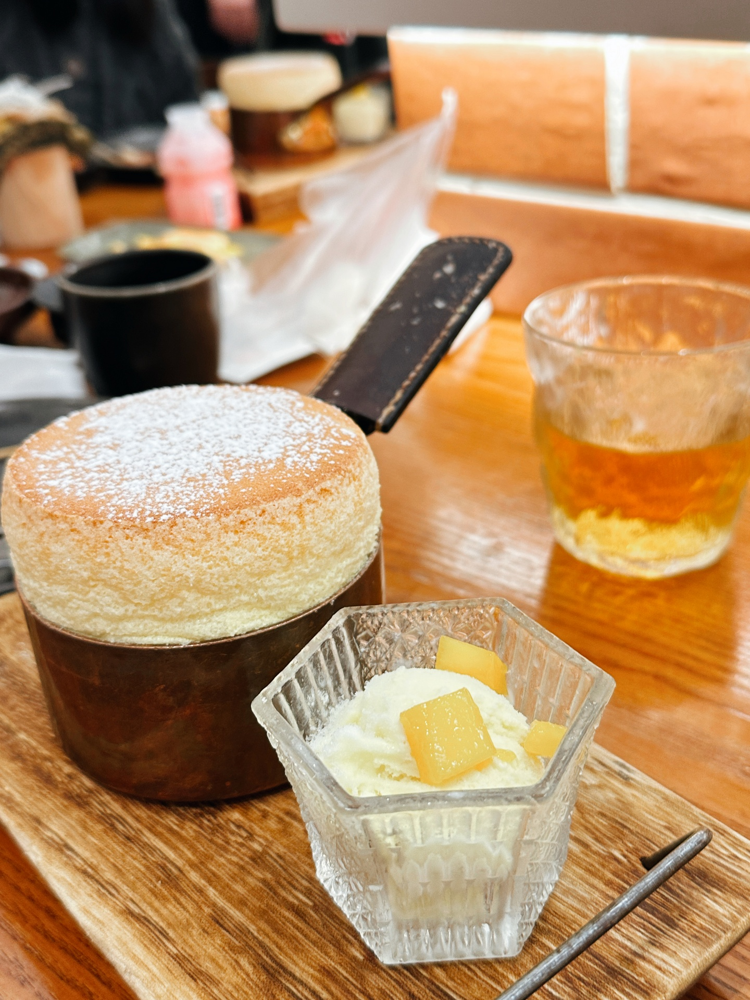

Here are some of my favorite photos from the past three years, taken in various places. Whenever I'm walking through the streets, I feel a strong urge to capture scenes that catch my eye, preserving them for a future day when I can look back and relive those moments.
Going on food adventures with friends always makes for some of my best memories. Each time I stumble across those photos, I remember the laughter and fun of those times, and it gives me a small escape, a bit of comfort in the midst of my busy studies.